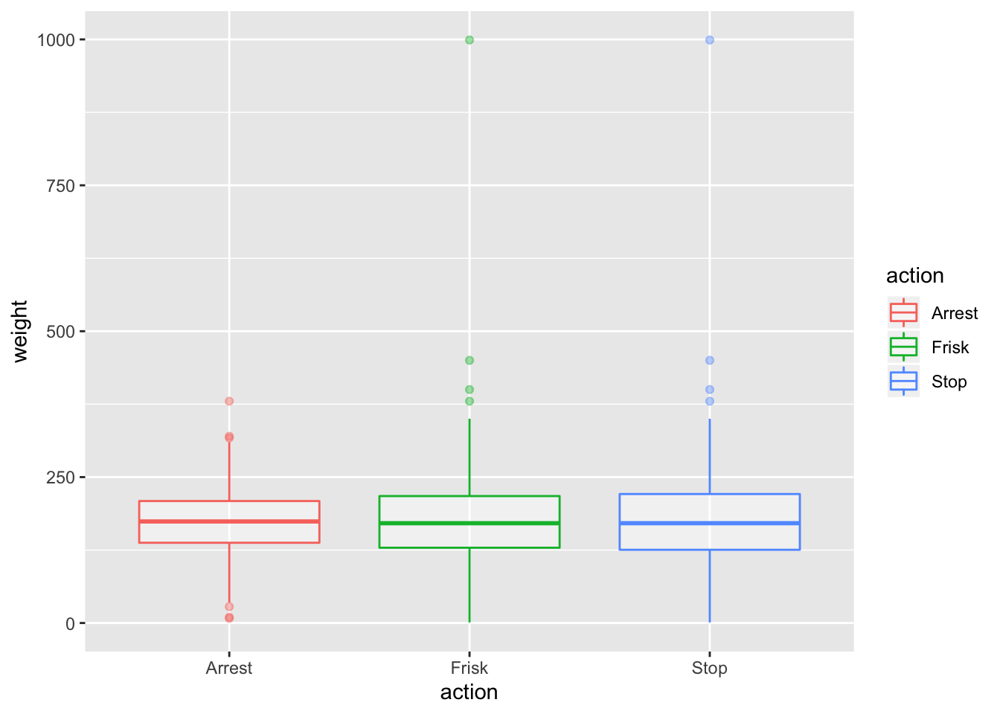

stop =
stop_frisk_df %>%
drop_na() %>%
mutate(
race = fct_infreq(race)
) %>%
ggplot(aes(race, fill = race))+
geom_bar(aes(y=(..count..)/sum(..count..)),alpha = .5, position = "dodge")+
labs(
title = "Percentages of Reported Stops by Race",
y= "percentage") +
theme(legend.position = "none")
frisk =
stop_frisk_df %>%
drop_na() %>%
mutate(
race = fct_infreq(race)
) %>%
filter(frisked == '1') %>%
ggplot(aes(race, fill = race))+
geom_bar(aes(y=(..count..)/sum(..count..)),alpha = .5, position = "dodge")+
labs(
title = "Percentages of Reported Stops Resulting in a Frisk by Race",
y= "percentage") +
theme(legend.position = "none")
(stop/frisk)
p = stop_frisk_df %>%
drop_na() %>%
mutate(stopped = as.numeric(stop_in_out),
stopped = case_when(
stopped > 0 ~ '1',
TRUE ~""),
stopped = as.numeric(stopped)) %>%
select(age, arst_made, frisked, stopped) %>%
pivot_longer(
arst_made:stopped,
names_to = "action",
values_to = "value") %>%
filter(value == '1') %>%
count(age, action) %>%
ggplot(aes(y= age, x = action )) +
geom_boxplot(aes(color=action), alpha = .4)
ggplotly(p)afs %>%
mutate(action = fct_relevel(action, c("Stop", "Frisk")),
race = fct_relevel(race, c("black", "white-hispanic", "white", "other"))
) %>%
plot_ly(x = ~action, y = ~n, type = "bar", color = ~ race)%>%
layout(
title = 'Frequency of race for Stop, Frisk, Arrest',
xaxis = list(
type = 'category',
title = 'Action'),
yaxis = list(
title = 'Frequency',
range = c(0, 6500)
)
)